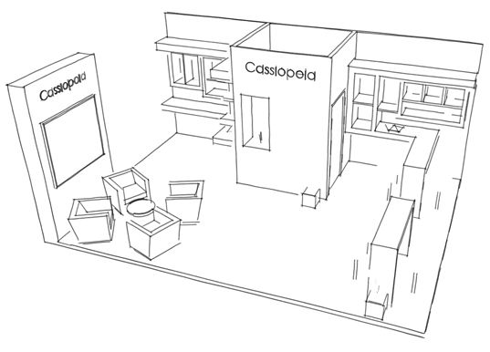
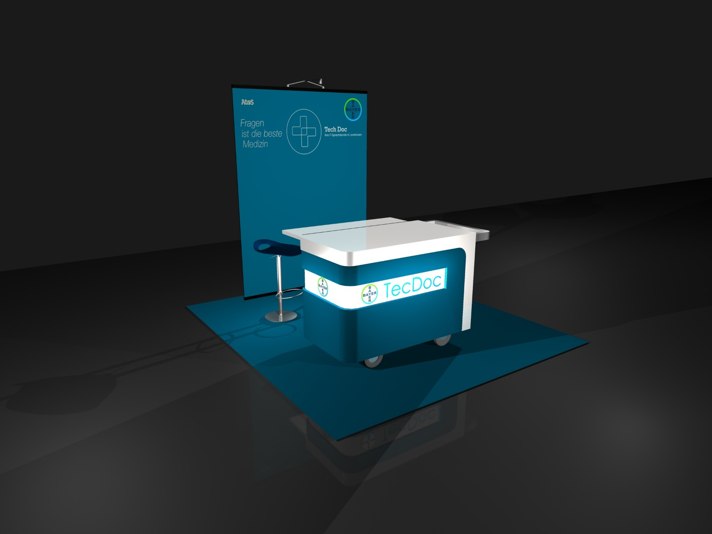

CLAIRE LITT
EXHIBITION STANDS • CORPORATE INTERIORS
TECHNICAL DRAWINGS
GRAPHIC DESIGN

|  |  |  |
I'm fortunate enough to work in the exhibition industry designing stands for companies exhibiting across the world. My passions lie in creating functional and eye catching designs, working from concept images through to technical drawings. They not only create an impact, but function well to improve your sales and corporate identity whether they are for custom build, modular stands or show features. In addition to this, I offer flexible working hours, accurate time management and reasonable rates. Projects include custom built designs for Atos and features for the BBC Good Food Show. Whether you are an exhibition contractor with a high volume of work or a company exhibiting at a show, take a look at my portfolio and services.

Creating working drawings for an exhibition stand is an important part of the process to ensure my designs work. These can be approval plans to present to the organisers of a show or simply working drawings to direct a build team. Along with this, I work on other projects such as drawing-up building surveys to create layouts which ensure areas function well. I have extensive knowledge of Part M of the Building Regulations to ensure people with disabilities are always considered within my designs, where appropriate. Please see examples in my portfolio section.

Working for large corporate clients, I help create spaces that become environments employees’ love, which in turn, aids productivity. Through the use of 3D and 2D software, I create visuals that show the overall look and plans which demonstrate how well the space will flow. I use Building Regulations and technical data, for example, anthropometrics to create functional working spaces. Projects include creating desk designs to be used worldwide for Bayer Pharmaceuticals and re-branding offices within Atos sites.

Having worked on various graphic projects over the years, I have recently undertaken a course in Graphic Design which complements my skills in exhibition stand design. Both areas encompass corporate identity and branding which can help to transform your business. Projects I’ve been involved with include creating a portfolio catalogue for Bayer Pharmaceuticals and purchase documentation for Silversurfers Assisted Bathing. Whether it’s a brochure to showcase your products, sales documentation or simply enhancing/editing photos, I can help you.